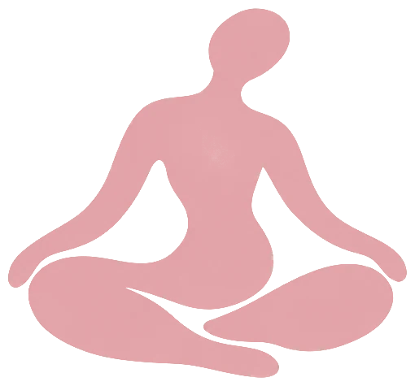

My approach
A decolonial approach to chronic pain
Most pain care approaches your body as a machine to be repaired, separate from your life and the world around you. A decolonial approach starts somewhere else: your pain makes sense, you hold authority over your own body, and your freedom is bound up with everyone else's.
Decolonial isn't a decoration here. It names a way of understanding pain that refuses to separate your symptoms from the conditions you live in, and refuses to hand your body over to systems that profit when you feel powerless. What follows are the convictions this work is built on. I'll be writing more under each one.
There is nothing wrong with you. There is something wrong with the world.
Write about why so many of us are told the problem is ours to carry alone, and what shifts when we locate it in the world instead.
The genocide in Palestine, the blockade on Cuba, and the pain in your body aren't separate stories. They come from the same system, one that decides which bodies matter.
Write about how systems of domination show up in the body, and why naming them is part of the work rather than a distraction from it.
Empire wants us to label each other. Healing asks us to hold contradictions.
Write about the pressure to sort people into fixed categories, and what it means to stay with complexity and contradiction in healing.
Empire needs us to see the world as dead, so it can take from it. But the world is alive, and so are you.
Write about aliveness, of land, body, and community, and how reconnecting with it undoes the logic of extraction.
Your healing is not a private matter. It's part of our collective liberation.
Write about how personal freedom returns energy and presence to the people and movements we belong to.
We're not saving the earth. We're saving ourselves.
Write about belonging to the living world rather than standing apart from it, and what that means for how we understand pain and care.